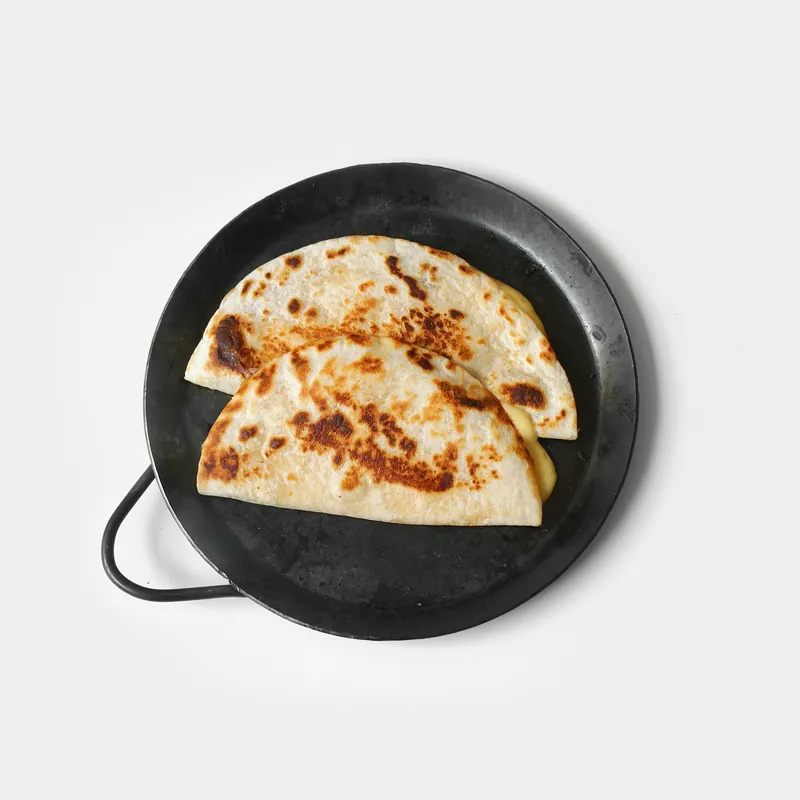
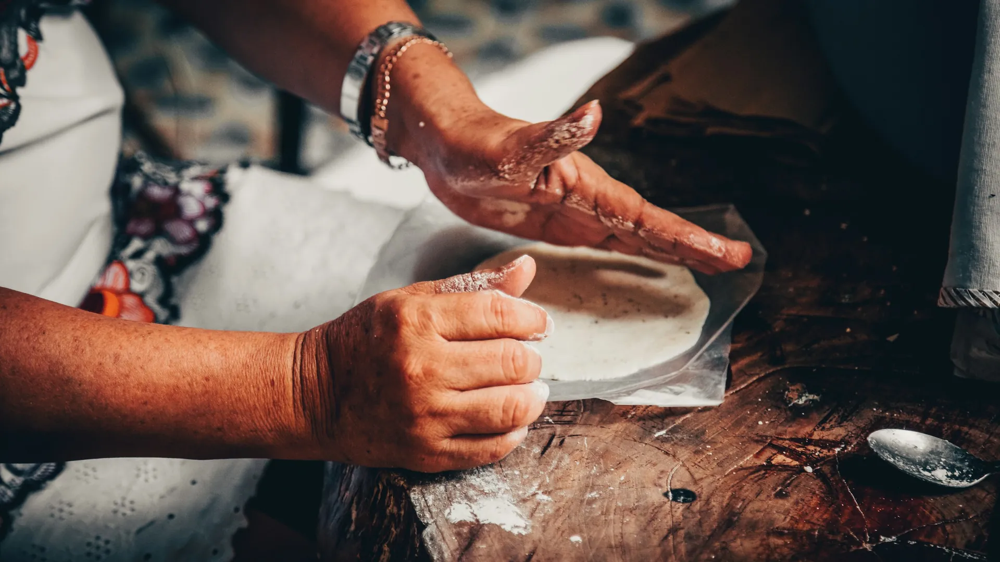
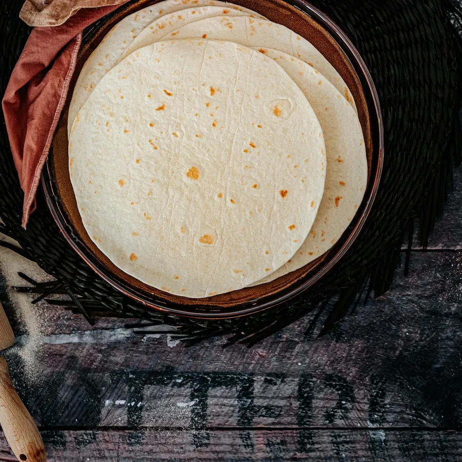
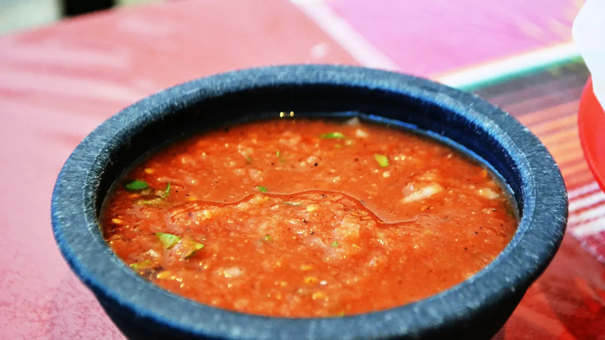

Quesadillas
On fresh handmade corn tortillas.
Every day
Comida de Chiapas
Quesadillas, huaraches, tacos and tostadas from the food trailer on Telegraph Street, with recipes from Chiapas, Mexico.

Handmade, every day
Customers say it again and again: the corn tortillas are pressed fresh by hand for the quesadillas, the meat is well seasoned, and the food comes out fast and filling.

“Best Mexican food in Utah!”Google review · Sept 2025
Reviews
“Best Mexican food in Utah! I am saying that as a Mexican… They definitely specialize in food from Chiapas. They take the time to hand make fresh corn tortillas for their quesadillas.”
“The carne asada tacos and asada quesadilla were on point. The meat was fresh, and the tortillas were really, really good.”
“The quesadillas are stellar. Super authentic. Good tortillas. The huaraches are quite good too.”
“Food was fresh, fast, and delicious. The tostadas we like the ones I ate growing up.”
Find the trailer
20 E Telegraph St, Washington, UT 84780
| Tue, Wed, Fri, Sat | 10 AM – 7 PM |
|---|---|
| Thursday | 10 AM – 6 PM |
| Sunday & Monday | Closed |
Hours from the Google listing. Food trucks can change plans, so please call to confirm.